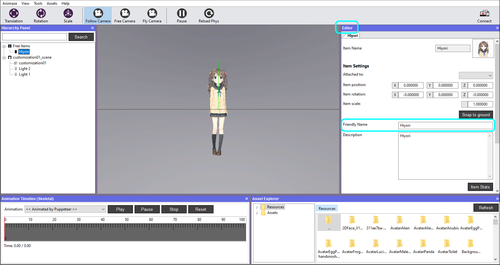

Change the avatar details (icon, description & name)
You can find your avatar’s icon in the avatar gallery. To view your avatar's name and description, click on the Info button that appears in the top right corner when your avatar is previewed in the gallery (see Mobile app avatar gallery image below). The icon, name and description can be changed in the Editor Panel of the Animaze Editor.


Steps to change the avatar’s Icon:
1. Go to the Animaze Editor install folder on your PC

2. Go to Data folder

3. Open Resource folder

4. Open the avatar's folder

5. You will find a file named icon_avatarname.png, which was automatically created by the Editor at import. By replacing/modifying this file with one of your choice, you will change the icon for the avatar in the app and Editor.

Note: Keep the same naming convention (icon_theavatarname), image format *.png (square size) in order for it to work.
6. Animaze Editor will detect the changes made and will ask you to reimport. Click Yes

7. To see the changes, go to the Assets menu and select Load Avatar.

8. Hit the Refresh button, then search and select Hiyori.

9. The avatar should display the new icon

Steps to change the Avatar’s Name:
1. In the Editor Panel, write the name you want in the Friendly Name field. As this name will be visible within the mobile app, we recommend that you make the name human readable (rather than random letters and numbers). That said, you can use any alphabet and special characters.

Steps to change the avatar’s Description:
1. In the Editor Panel, write the description you want in the Description field. It can be the avatar’s backstory you imagined, technical details or you can leave it blank.

RIght click on the avatar and select Save item in the Hierarchy Panel when you are done with the changes, be it a name, description, or other details.

If you opt for Save item as the Editor will create and load a copy of the current item.
i.e. when you Save item as Hiyori_version2, it will create a different folder in Resources directory and save it outside the original version, as a new item.
Send the avatar to the Animaze iOS app and see the changes, by pushing the info button in the upper right corner in app avatar gallery.